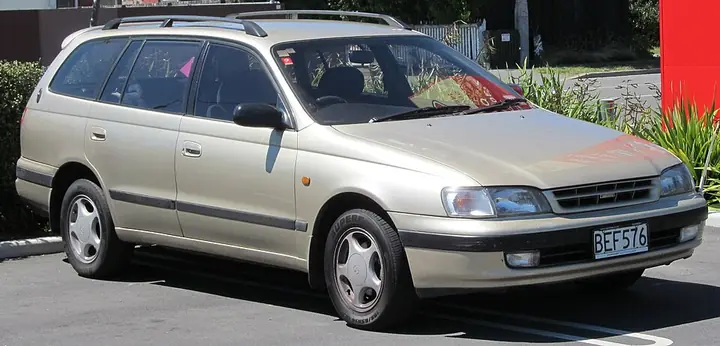
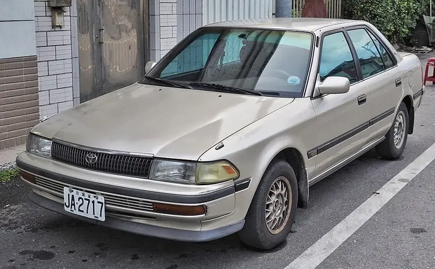
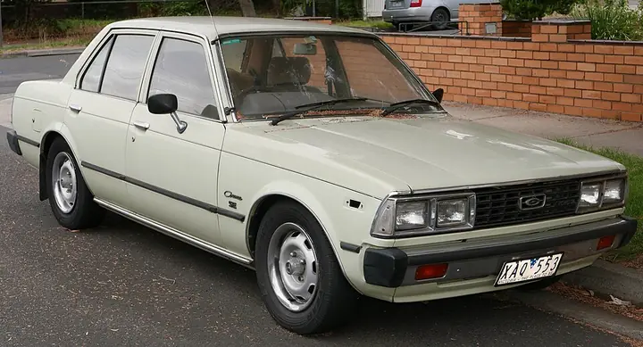
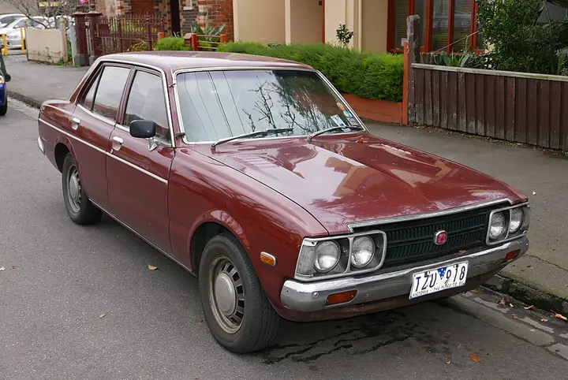

Toyota Corona
Ninth generation (T190; 1992) · 1992–1998
Abstract
This generation of the Toyota Corona was built March 1992 – 1996 (Japan) in Japan: Toyota, Aichi (Tsutsumi plant), Indonesia: North Jakarta, Thailand: Chachoengsao and other plants. Body styles: 4-door sedan, 5-door liftback, 5-door station wagon. Layout: Front-engine, front-wheel-drive.
_front.jpg){kind=link}
1Specifications
| Production | March 1992 – 1996 (Japan)December 1992–1997 (United Kingdom)1993–1998 (Philippines) |
|---|---|
| Assembly | Japan: Toyota, Aichi (Tsutsumi plant)Indonesia: North JakartaThailand: ChachoengsaoNew Zealand: ThamesPhilippines: Parañaque (1993–1997); Santa Rosa (1997–1998), (TMP)Taiwan: ZhongliUnited Kingdom: Burnaston |
| Body style | 4-door sedan5-door liftback5-door station wagon |
| Layout | Front-engine, front-wheel-driveFront-engine, four-wheel-drive |
| Engine | Petrol:1.6 L 4A-FE I4 (AT190)1.8 L 7A-FE I4 (AT191)1.8 L 4S-FE I4 (ST190)2.0 L 3S-FE I4 (ST191/195)2.0 L 3S-GE I4 (ST191; Carina E only)Diesel:2.0 L 2C-III I4 (CT190/195)2.0 L 2C-T I4 turbo-diesel (CT190; Carina E only) |
| Transmission | 5-speed manual4-speed automatic |
| Wheelbase | 2580 mm |
| Length | 4545 mm (wagon)4520-4620 mm |
| Width | 1695 mm |
| Height | 1410 mm (FWD sedan/liftback)1425 mm (AWD sedan)1450 mm (FWD wagon)1470 mm (AWD wagon) |
| Weight | 1040-1310 kg |
| Also called | Toyota Carina E (Europe)Toyota Caldina (station wagon/van) |
| Related | Toyota CelicaToyota CurrenToyota Carina |
2Versions


- Carina E
- Corona EXiV (T200)
3Previous generations

.jpg){kind=link}

_SE_sedan_(2016-01-04)_01.jpg){kind=link}

_SE_sedan_(2015-06-18)_01.jpg){kind=link}
.jpg){kind=link}


4Generation by generation
Length +16% from the first to the last
T10 19573,912 mm
T20 19603,990 mm
T40 19644,065 mm
T80 19704,170 mm
T100 19734,250 mm
T130 19784,260 mm
T170 19874,435 mm
T190 19924,545 mm
Weight +8% from the first to the last
T10 1957960 kg
T20 1960940 kg
T40 1964900 kg
T80 1970945 kg
T100 19731,090 kg
T130 1978970 kg
T170 1987960 kg
T190 19921,040 kg